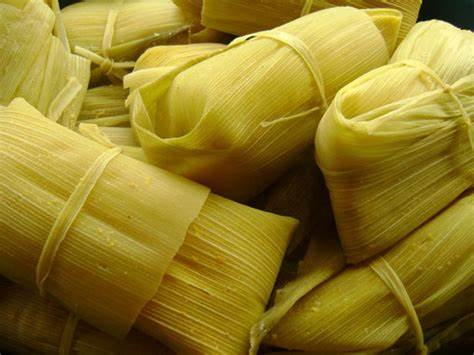

Pamonha

Description
Pamonha, a typical indigenous food, it's made of corn and heavily consumed in the state of Goiás.
Ingredients
-
6 corn cobs;
-
1/2 glass of water;
-
1 cup of sugar;
-
A bit of salt;
-
Straw to pack;
Steps
-
Remove the grains and put in a blender with water, salt and a bit of soy oil;
-
Make a small container with the straw, put the corn mass in and tie it tightly;
-
Boil a pot with water;
-
Put the straw in boiling water e remove after 40 minutes.